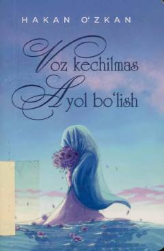

VKAyollarning o'z qadrini anglashi va munosabatlarda muvaffaqiyatga erishishi haqidagi qo'llanma.
Ushbu kitob ayollarning o'z qadr-qimmatini anglashi, munosabatlarda oqilona va samimiy bo'lishi hamda o'z maqsadlariga erishish yo'lida qat'iyatli bo'lishi haqida so'z yuritadi. Muallif ayollarning o'ziga bo'lgan ishonchini oshirish va sog'lom munosabatlar qurish bo'yicha amaliy tavsiyalar beradi.